Your items.
Your workflow.
Configure the helpers you want, then use your normal D&D5e activities and cards.
Module settings
Open Configure Settings → Region Spell Automation → Open Module Options. GMs manage world options; players can change their client options. Previous settings carry over. All module features can be enabled or disabled as desired here; the sections below describe how they work when in use.
- Choose the relevant tab: Regions, Targeting, Rolls & Damage, Effects, Chat, Weapon Mastery & Attack Properties, or GM NPC & Damage.
- Enable the options your table wants. Damage prompts, damage application, effects, NPC saves, and card presentation are separate choices.
- Click Save Options. Switching tabs preserves draft changes; Cancel leaves stored settings unchanged.
Keep an active GM connected for automatic application and Region setup. Enable overlapping targeting, damage, or mastery automation in only one module while testing.
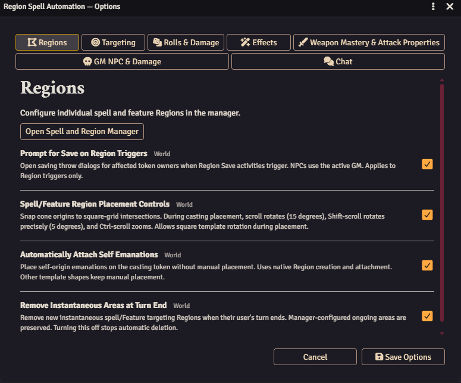
Add a spell Region
Use an existing spell from the SRD, Foundry Player's Handbook, or a D&D Beyond import. The module uses that item's activities and effects; it does not create a replacement spell.
Prepare your spell or feature
Its casting activity must create a D&D5e Region. Add the recurring save or damage activities and existing effects you need to the same item.
Open the manager
Use Compendiums → Open Region Spell Manager, or open the Spell and Region Manager from Module Options. Choose Edit beside an existing configuration, or add a new one.
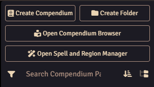
Open Spell and Region Manager is directly beneath Open Compendium Browser. 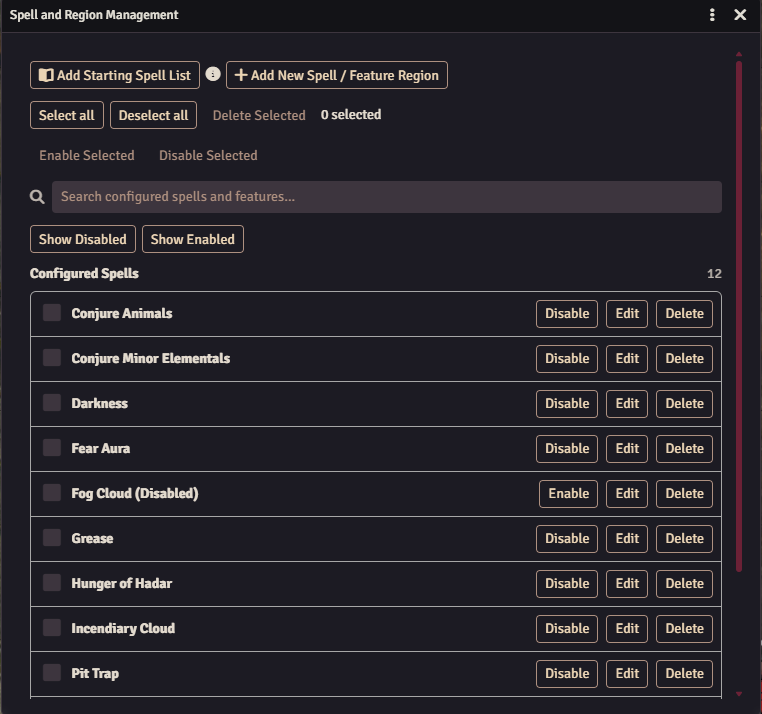
Drop in your item
Choose Add New Spell / Feature Region. Drag a spell, player feature, or monster ability from an actor sheet, Items, or a compendium into the drop window.
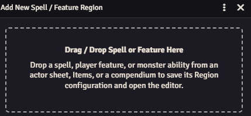
Configure, save, and cast
Match activity names exactly and choose entry, exit, movement, turn-start, or turn-end triggers with the appropriate targeting mode.
Add conditions or existing Region Effects. Consider Once Per Turn and Share Activity Card Per Turn for repeated areas, or Movement Damage increments for Spike Growth.
Click Confirm / Save and test a fresh cast after each change.
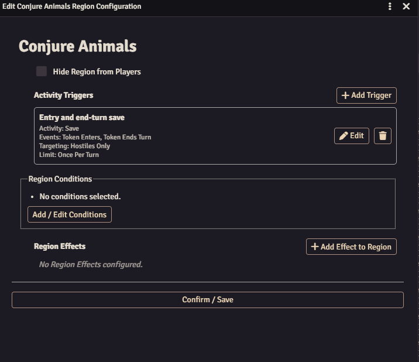
Start/end-turn triggers require active combat and initiative. Once Per Turn means once per target in the current combat turn, not once per round. Shared cards can gain new targets and reuse the damage already rolled.
Confirm and retarget
Place the area: automatic selection follows the card's enemy/ally targeting relative to the caster, with a matching configured trigger as fallback, then everyone eligible.
- Review Confirm Targets. Target tokens on the map to add them; click a listed name to remove it.
- Confirm to update the activity card and continue to saves and damage. Close — Resolve Manually leaves the cast available for manual resolution.
- To correct a card later, select the intended tokens and click Retarget. Weapon and attack cards are supported too.
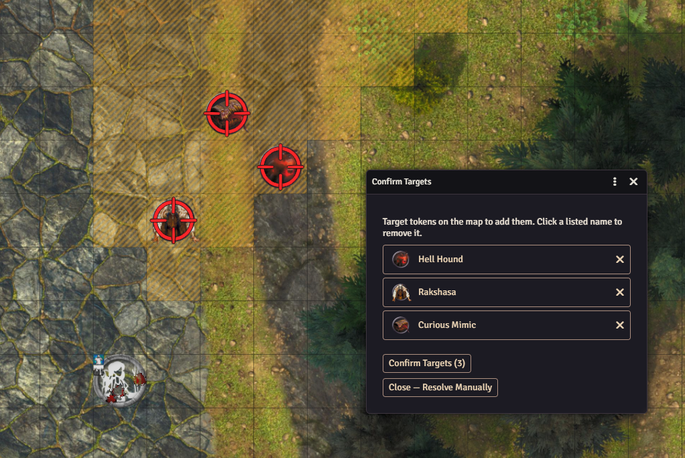
After Shield or another AC change, Retarget refreshes linked hit/miss results without replacing the original dice. It does not undo applied damage. Linked concentration removes the area when concentration ends; instantaneous areas clear at the caster's turn end.
End linked concentration from the token HUD
Right-click the concentrating token. As the GM or actor owner, use the End Concentration control to end concentration quickly. Regions linked to the originating spell are removed automatically.
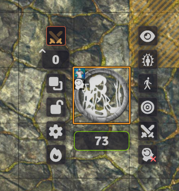
Advantage, normal
& disadvantage
- Hover over a completed save or attack result and select ADV / NORMAL / DISADV.
- The original d20 and bonuses remain. An additional d20 rolls only when needed, then stays cached for later changes.
Linked results update without replacing original dice. After damage is applied, the linked attack/save and damage correction controls are locked. Undo all outstanding linked damage applications before adjusting; applying again relocks them.
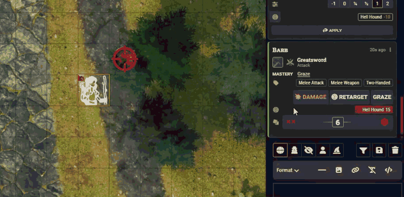
Normal and critical damage
Hover over a damage result and select NORMAL / CRITICAL. Base dice and bonuses stay in place; Critical adds only the extra dice required, then reuses cached results on later changes. After damage is applied, use Undo Damage before changing modes. Applying again locks the controls. Critical-enabled Damage activities such as Divine Smite are supported; save spells, healing, and Graze are excluded. Complex or modified formulas may require manual correction.
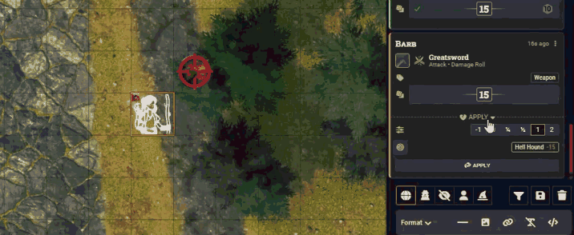
Damage and effects
Configure these independent options to suit your table. Effects must already be assigned to the activity.
- Prompt Damage after an Attack Hit: opens the native damage dialog on a confirmed hit, retaining critical and weapon-mode information. Unknown hit results remain manual.
- Prompt Damage for Save Activities: opens the native dialog for saves with damage; area casts wait for target confirmation.
- Auto Apply Damage: applies through the native damage tray. Attacks use confirmed hits; save damage waits for every eligible target's result. Native multipliers, resistance, immunity, and vulnerability remain in use.
- Automatically Apply Buffs: applies existing effects from non-rolling Utility activities to the caster or eligible recorded targets.
- Auto Apply Saved Effects: failed saves receive assigned effects; successful saves receive those marked On Save. With auto damage enabled, effects follow damage.
- Autoapply Status on Hit: applies assigned attack effects to hit targets, independently of auto damage.
- Automatically Roll GM NPC Saves: uses native fast-forward rolls for NPCs without player owners. PCs and player-owned NPCs retain prompts.
Native effect application handles duration, concentration, and scaling. Interacting with relevant card controls or applying damage manually stops that activity's automatic damage workflow.
Weapon masteries
- Unlock the weapon's mastery on the actor using D&D5e's native Weapon Mastery configuration.
- Keep a GM connected to resolve mastery automation.
- Use the weapon's mastery on the normal attack. Sap applies on hits; Vex and Slow apply after damage. Use card actions for Topple saves and Graze miss damage.
Sap/Vex controls allow corrections, and the next roll's mode can still be changed. Graze creates a damage card; application follows your chosen damage workflow. Push, Nick, and Cleave remain manual.
Graze on a missed attack
After a miss, click Graze on the attack card to create a flat damage card using the attack's ability modifier and weapon damage type. Resolve its damage through the card using your chosen damage workflow.
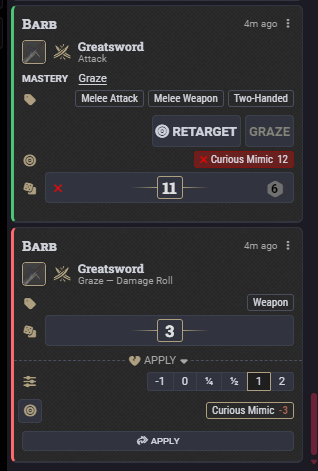
Undo damage
and effects
- As GM, find the source card after a tracked application.
- Click Undo Damage to reverse that card's recorded HP, temporary HP, and temporary maximum HP changes. Multiple applications from the same card reverse together.
- Click Undo Effect to remove effects created by the card or restore refreshed effects, independently of HP. Changes superseded by a later cast are preserved.
- The corresponding tray reopens for manual application. Original dice and other cards remain unchanged.
Undo requires recorded applications made after the feature loaded; older history cannot be reconstructed. Keep a GM connected to record player applications.
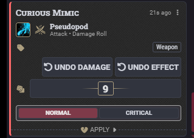
Repeat attacks
and bonus damage
Resolve each beam or ray
Cast Eldritch Blast or Scorching Ray normally. The Pending Attacks window counts remaining shots using the character or cast level. Select the next single target and click Attack. Each shot uses its own attack target and native attack/damage controls, without another slot spend. Canceling a roll does not consume a shot; the window closes at zero.

Choose bonus damage on the native dialog
Bonus-damage setup and compatibility. Automated damage riders such as Sneak Attack, Hex, and Hunter's Mark are based on the Foundry D&D 5.5e Player's Handbook items and activities. Automation may also work with characters imported from D&D Beyond, but those imports have not been tested.
Hex and Hunter's Mark require active concentration and one marked target. Configure the spells under Bonus Damage Riders; their checked damage options add components to the same attack damage card. Retargeting the mark's usage card updates its association. Hunter's Mark can apply its configured effect through GM effect automation; Hex retains manual effect selection.
Conjure Minor Elementals checks whether the attack target is inside your concentrated spell's Region. Its configured Bonus Attack Damage activity and cast level supply the scaling. Choose Acid, Cold, Fire, or Lightning; your last elemental choice is remembered. These spell riders currently support single-target damage cards.
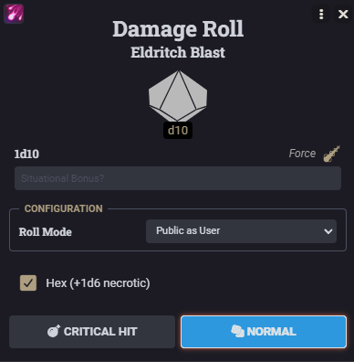
Sneak Attack
The damage checkbox defaults on after Advantage and remains manually selectable otherwise. It uses the feature's configured damage and the weapon damage type. The used marker resets at the end of the current combat turn, allowing later reaction attacks; canceling does not consume it. Check eligibility before selecting it—the checkbox is not a complete rules adjudicator.
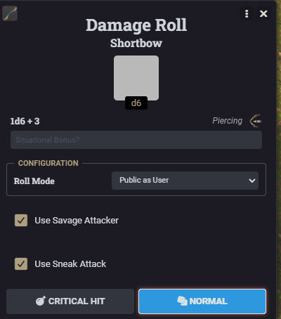
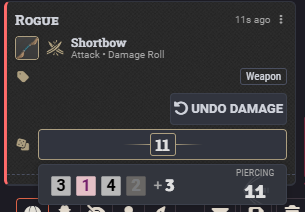
Savage Attacker and Reckless Attack
Savage Attacker's optional weapon damage checkbox rolls two complete dice sets and keeps the higher total, with both shown in roll details. Its used marker lasts until next turn start. After undoing applied damage, Normal/Critical corrections retain cached rolls and recalculate the winning set.
For Reckless Attack, use the split Adv/Reckless control on an eligible Strength attack. It applies the configured feature effect, or a marker for text-only imports, and completes the native attack. Subsequent Strength attacks and attacks against the Reckless creature recommend advantage with normal disadvantage cancellation. The effect ends at the source's next turn start.
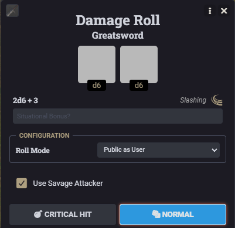
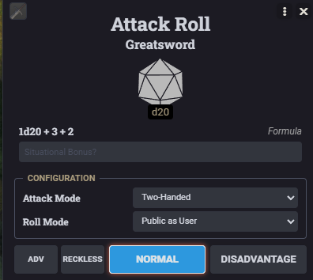
Reactions and pending saves
Manual off-turn spell, weapon, and feature uses apply Reaction - used. Further off-turn uses are blocked until the marker is disabled, deleted, or expires at next turn start. Saves, linked damage, and automated Region triggers remain available.
Click a pending save as GM or token owner to receive its saving-throw prompt. The previous module popup closes on connected clients when still open, allowing a GM to take over for an unavailable player.
Find the new options under Bonus Damage Riders, Weapon Mastery & Attack Properties, and Effects. After updating, restart Foundry and hard-refresh GM and player clients.